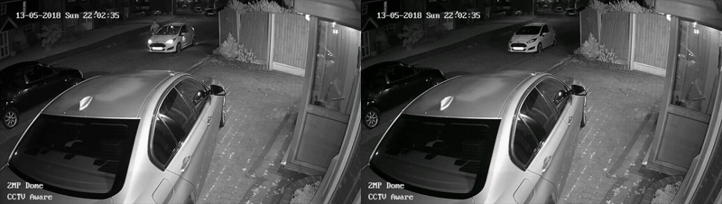
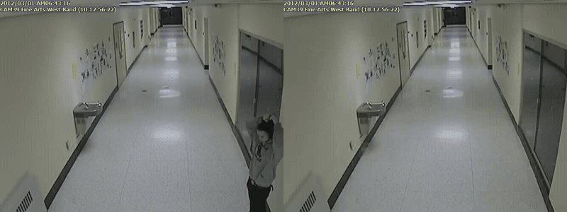

Freeze the world. Keep the clock ticking.
An open-source computer vision pipeline that removes people from security footage while preserving the live timestamp. Frame-perfect, zero-config, fully local.
Real security footage. Real results. Left side is the original recording. Right side is petrify's output. The timestamp keeps running. The people are gone.


A single detector is never enough. petrify chains three complementary signals so every subject is caught. fast movers, standing-still loiterers, and distant figures barely larger than noise.
Scans every frame to identify the cleanest background window. The longest uninterrupted stretch with no detected motion. That window is median-composited into the locked reference frame that persists for the entire render.
Every frame is classified as person or not. Person frames swap in the locked background. The timestamp ROI is auto-detected via Laplacian edge scanning and composited live onto each frozen frame so the clock never stops.
Zero-config by default. Every parameter tunable when defaults aren't enough.
Install once, run anywhere. petrify puts itself on your PATH via pipx. No virtualenv juggling.
# 1. Install system FFmpeg $ brew install ffmpeg # macOS $ sudo apt install ffmpeg # Linux # 2. Install petrify (adds to PATH) $ pipx install petrify # Or from source $ git clone https://github.com/starside-io/petrify $ cd petrify && pipx install -e .
# Zero-config. Auto-detects everything $ petrify input.mp4 output.mp4 # Explicit ROI (faster, skips scan) $ petrify input.mp4 output.mp4 --roi 0 55 700 60 # Higher sensitivity $ petrify input.mp4 output.mp4 \ --threshold 200 \ --bg-diff-area-threshold 100 # Disable auto-ROI scan $ petrify input.mp4 output.mp4 --no-roi
Run petrify input.mp4 output.mp4 and walk away.
petrify will auto-detect the timestamp position, build the background reference,
and produce a clean output. No flags required.
If there's a locked-down camera and a burned-in clock, petrify can strip the subjects while preserving the timeline.